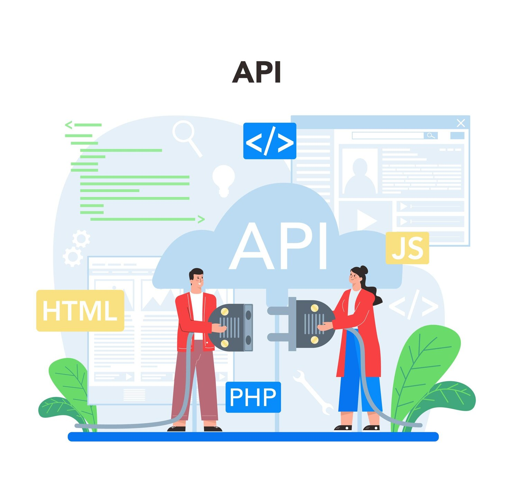
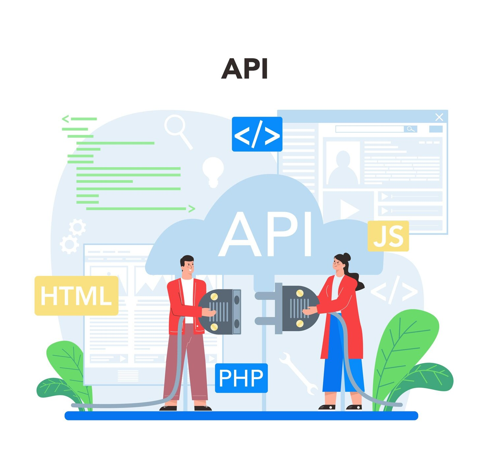

1️⃣ C’est quoi une API ?
Une API (Application Programming Interface) est une
interface qui permet à deux applications de communiquer entre elles.
Elle définit un ensemble de règles permettant l’échange de données et
de fonctionnalités.
sert d'intermédiaire entre différentes applications, facilitant
l'échange de données et de fonctionnalités.
Roadmap-API
En savoir plus
2️⃣ Son utilité dans le développement web
Communication entre les applications
Une API permet à deux applications,logiciels ou services de
communiquer et d'échanger des données. On peut l'illustrer par
l'exemple d'une personne qui souhaite parler à quelqu'un se trouvant
loin. Lorsqu'elle prend son téléphone et appelle,elle émet une
requête. Le réseau établit alors la liaison et elle peut parler à
l'autre personne. C'est le principe de l'API : elle interagit en
interne, garantissant la fiabilité entre deux entités, sans que l'une
ait besoin de comprendre le fonctionnement de l'autre.
-
🔗 Connecter différentes applications (ex : connexion via
Google/Facebook).
-
📡 Accéder à des services externes (ex : API météo, Google Maps).
- ⚙️ Automatiser des tâches (ex : envoi d'e-mails).
-
🛠️ Créer des applications modulaires en séparant frontend et
backend.
Réutulisation de fonctionnalités
Plutôt que de tout developper en partant de zéro, les developpeurs
peuvent utiliser des API pour intégrer des fonctionnalités
(googleMaps,).
Interopérabilité
Les API permettent à des systèmes différents de fonctionner ensemble
en partageant des données et services ex: (Un site web et une
application mobile)
Innovation et rapidité
En utilisant des API,les developpeurs peuvent se concentrer sur la
création de nouvelles fonctionnalités sans avoir à réinventer la roue.
Cela accélère le developpement.
Scalabilité
Les API permettent de separer le frontend (interface utilisateur) du
backend (logique du metier), ce qui facilite la maintenance et
l'évolution d'une application.
EXEMPLES CONCRETS
Reseaux sociaux : Integrer un bouton "Partager sur
facebook" via l'API de facebook
Paiements en ligne : Utiliser l'API de Paypal pour
gérer les transaction Cartes interactives : Intégrer
GoogleMaps via son API.
EN BREF : les API son indispensables pour créer des
application web modernes, interactives et connecter à d'autres
services. Elle simplifie le developpement et ouvrent des possibilités
infinies d'intégration.
4️⃣ Les principaux types d’API
- 📌 API REST → Utilise HTTP et JSON.
API REST est une manière standard et éfficace de
faire communiquer des applications via le web
-
📌 API GraphQL → Récupère uniquement les données
nécessaires.
API GraphQL est une alternative moderne et
puissante de API REST, offrant plus de contrôle et de flexibilité
aux clients
-
📌 API SOAP → Utilise XML, souvent en entreprise.
API SOAP est un protocole robuste et sécurisé,
mais plus complexe et moins flexible que REST ou GraphQL. Il est
idéal pour les systèmes d'entreprise critique.
Ex: système de gestion bancaire
-
📌 API WebSocket → Communication en temps réel.
API WebSocket est un protocole puissant pour les
applications en temps réel, offrant une Communication instantatnée
et bidirectionnelle(le client et le serveur peuvent envoyer des
données à tout moment) entre le client et le serveur
S'autoformer
Il est plus facile de se former aujourd'hui dans les compétence
informatique à par le biai de multiples resources disponible en
ligne.
Voici une liste de liens vers des platformes de formation
Lance-toi
À toi de jouer
5️⃣ Fonctionnement d’une API (Exemple d’une requête REST)
 

Ces images sont les illustration demonstrative du fonctionnement de
l'API.
VOS_QUESTONS